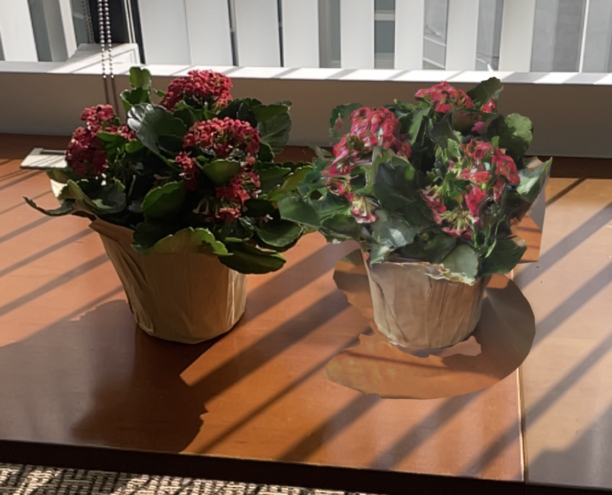

<div class="textcontainer">
<p class="margin"> </p>
<h4>Assignment 5: 3D Printing</h4><br>
<h4><b>idea: tiny snapfit box</b></h4>
<h5><em>Materials and equipment</em></h5>
<p>Fusion 360<br>
PRUSA 3D printer and filament<br>
<br>
<h5><em>the process</em></h5>
I wanted to make a tiny box like one of the individual compartments on a pillbox to practice modeling my final project design in Fusion, and this would be a fairly quick print. I designed the following print in place 3x3x3cm box with a hinged lid and snap-fit closure following this <a href="https://www.youtube.com/watch?v=KL1aj16ynf4">Youtube tutorial</a>, with my own dimensions and a smaller hinge (which actually turned out to be a little TOO small later).
<p class="margin"></p>
<div class="flexrow">
<img src="./snapfit bottom.png" alt="fusion 360 cad of bottom of snapfit closure on box" width=20%>
<img src="./snapfit top.png" alt="fusion 360 cad of top of snapfit closure on box" width=20%></div>
<br>
<p class="caption"> Snapfit and hinge components of the box</p>
<div class="flexrow">
<video width="50%" autoplay muted>
<source src="./boxopening.MOV" type="video/mp4">
</video>
</div>
Here are the<a href="./box v3.stl" download>STL file</a> and <a href="./box.gcode" download>gcode file</a> to print!<br>
<br>
<h5><em>scanning something</em></h5>
I used the app <a href="scaniverse.com">Scaniverse</a> to scan a flower pot that was in the office at my job using my phone. It worked okay but not amazingly, and if I wanted to put out a polished product I would definitely use the Revopoint. It was fun to have an AR model on my phone, and I used it to put the model flower next to the real flower.<br>
<div class="flexrow">

<video src="./flower.mp4" width="25%" type="video/mp4" autoplay></video>
</div>
<br>
<a href="./flower.stl" download>Here is the STL file of the flower!</a>
See my final project page for a preliminary model and materials.
</div>